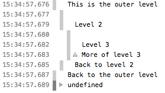
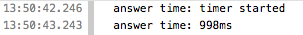
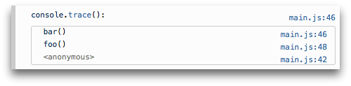

Non-standard
This feature is non-standard and is not on a standards track. Do not use it on production sites facing the Web: it will not work for every user. There may also be large incompatibilities between implementations and the behavior may change in the future.
The Console object provides access to the browser's debugging console (e.g., the Web Console in Firefox). The specifics of how it works vary from browser to browser, but there is a de facto set of features that are typically provided.
The Console object can be accessed from any global object, Window on browsing scopes, WorkerGlobalScope, and its specific variants in workers via property console.
This page documents the Methods available on the console object and gives a few Usage examples.
Methods
Console.assert()- Log a message and stack trace to console if first argument is
false. Console.clear()- Clear the console.
Console.count()- Log the number of times this line has been called with the given label.
Console.debug()- An alias for
log(); Console.dir()- Displays an interactive listing of the properties of a specified JavaScript object. This listing lets you use disclosure triangles to examine the contents of child objects.
Console.dirxml()-
Displays an XML/HTML Element representation of the specified object if possible or the JavaScript Object view if it is not.
Console.error()- Outputs an error message. You may use string substitution and additional arguments with this method.
Console._exception()- An alias for
error(); Console.group()- Creates a new inline group, indenting all following output by another level. To move back out a level, call
groupEnd(). Console.groupCollapsed()- Creates a new inline group, indenting all following output by another level; unlike
group(), this starts with the inline group collapsed, requiring the use of a disclosure button to expand it. To move back out a level, callgroupEnd(). Console.groupEnd()- Exits the current inline group.
Console.info()- Informative logging information. You may use string substitution and additional arguments with this method.
Console.log()- For general output of logging information. You may use string substitution and additional arguments with this method.
Console.profile()- Starts the browser's build-in profiler (for example, the Firefox performance tool). You can specify an optional name for the profile.
Console.profileEnd()- Stops the profiler. You can see the resulting profile in the browser's performance tool (for example, the Firefox performance tool).
Console.table()- Displays tabular data as a table.
Console.time()- Starts a timer with a name specified as an input parameter. Up to 10,000 simultaneous timers can run on a given page.
Console.timeEnd()- Stops the specified timer and logs the elapsed time in seconds since its start.
Console.timeStamp()- Adds a marker to the browser's Timeline or Waterfall tool.
Console.trace()- Outputs a stack trace.
Console.warn()- Outputs a warning message. You may use string substitution and additional arguments with this method.
Usage
Outputting text to the console
The most frequently-used feature of the console is logging of text and other data. There are four categories of output you can generate, using the console.log(), console.info(), console.warn(), and console.error() methods. Each of these results in output that's styled differently in the log, and you can use the filtering controls provided by your browser to only view the kinds of output that interest you.
There are two ways to use each of the output methods; you can simply pass in a list of objects whose string representations get concatenated into one string, then output to the console, or you can pass in a string containing zero or more substitution strings followed by a list of the objects with which to replace them.
Outputting a single object
The simplest way to use the logging methods is to output a single object:
var someObject = { str: "Some text", id: 5 };
console.log(someObject);
The output looks something like this:
[09:27:13.475] ({str:"Some text", id:5})
Outputting multiple objects
You can also output multiple objects by simply listing them when calling the logging method, like this:
var car = "Dodge Charger";
var someObject = {str:"Some text", id:5};
console.info("My first car was a", car, ". The object is: ", someObject);
This output will look like this:
[09:28:22.711] My first car was a Dodge Charger . The object is: ({str:"Some text", id:5})
Using string substitutions
Gecko 9.0 (Firefox 9.0 / Thunderbird 9.0 / SeaMonkey 2.6) introduced support for string substitutions. When passing a string to one of the console object's methods that accepts a string, you may use these substitution strings:
| Substitution string | Description |
| %o or %O | Outputs a JavaScript object. Clicking the object name opens more information about it in the inspector. |
| %d or %i | Outputs an integer. Number formatting is supported, for example console.log("Foo %.2d", 1.1) will output the number as two significant figures with a leading 0: Foo 01 |
| %s | Outputs a string. |
| %f | Outputs a floating-point value. Formatting is supported, for example console.log("Foo %.2f", 1.1) will output the number to 2 decimal places: Foo 1.10 |
Each of these pulls the next argument after the format string off the parameter list. For example:
for (var i=0; i<5; i++) {
console.log("Hello, %s. You've called me %d times.", "Bob", i+1);
}
The output looks like this:
[13:14:13.481] Hello, Bob. You've called me 1 times. [13:14:13.483] Hello, Bob. You've called me 2 times. [13:14:13.485] Hello, Bob. You've called me 3 times. [13:14:13.487] Hello, Bob. You've called me 4 times. [13:14:13.488] Hello, Bob. You've called me 5 times.
Styling console output
You can use the "%c" directive to apply a CSS style to console output:
console.log("This is %cMy stylish message", "color: yellow; font-style: italic; background-color: blue;padding: 2px");
Note: Quite a few CSS properties are supported by this styling; you should experiment and see which ones provide useful.
Using groups in the console
(Firefox 9.0 / Thunderbird 9.0 / SeaMonkey 2.6)You can use nested groups to help organize your output by visually combining related material. To create a new nested block, call console.group(). The console.groupCollapsed() method is similar, but creates the new block collapsed, requiring the use of a disclosure button to open it for reading.
groupCollapsed() method is the same as group() at this time.To exit the current group, simply call console.groupEnd(). For example, given this code:
console.log("This is the outer level");
console.group();
console.log("Level 2");
console.group();
console.log("Level 3");
console.warn("More of level 3");
console.groupEnd();
console.log("Back to level 2");
console.groupEnd();
console.debug("Back to the outer level");
The output looks like this:

Timers
(Firefox 10.0 / Thunderbird 10.0 / SeaMonkey 2.7)In order to calculate the duration of a specific operation, Gecko 10 introduced the support of timers in the console object. To start a timer, call the console.time() method, giving it a name as the only parameter. To stop the timer, and to get the elapsed time in milliseconds, just call the console.timeEnd() method, again passing the timer's name as the parameter. Up to 10,000 timers can run simultaneously on a given page.
For example, given this code:
console.time("answer time");
alert("Click to continue");
console.timeEnd("answer time");
will log the time needed by the user to discard the alert box:

Notice that the timer's name is displayed both when the timer is started and when it's stopped.
Stack traces
The console object also supports outputting a stack trace; this will show you the call path taken to reach the point at which you call console.trace(). Given code like this:
function foo() {
function bar() {
console.trace();
}
bar();
}
foo();
The output in the console looks something like this:

Specification
Notes
- At least in Firefox, if a page defines a console object, that object overrides the one built into Firefox.
- Prior to Gecko 12.0, the console object's methods only work when the Web Console is open. Starting with Gecko 12.0, output is cached until the Web Console is opened, then displayed at that time.
- It's worth noting that the Firefox's built-in
consoleobject is compatible with the one provided by Firebug.
See also
- Tools
- Web Console — how the Web Console in Firefox handles console API calls
- Remote debugging — how to see console output when the debugging target is a mobile device
- On-device console logging — how to do logging on Firefox OS devices